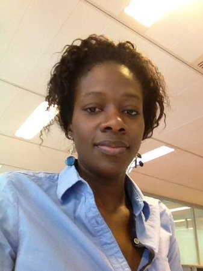

About Me
Born and raised in Senegal-West Africa-, I moved to France to go to college at 18 years old. My husband, my daughters and I moved to the US 4 years ago.
After my degree in Computer Science adapted to management, I started my career as a developper in Banking Industry. I enjoyed working directly with my customers-accounting services, back and middle office agents- and putting my double skillsets into practice.
I spent three years coding and started moving into more testing and client support which led me to Project management.
If I'm not in front of a computer - which was the case the last 4 years - you will most likely find me in my kitchen cooking for my family or baking all the French pastries I miss.